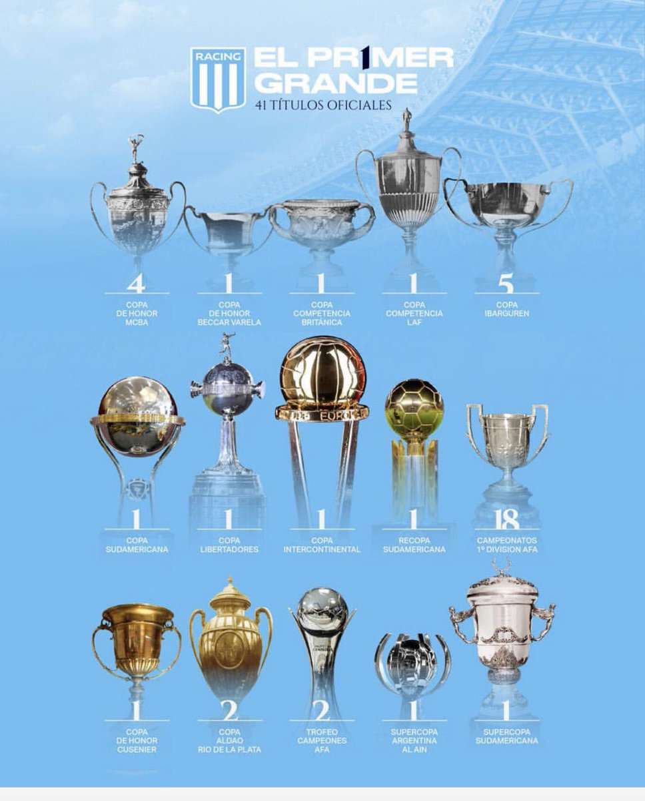

Racing Club de Avellaneda fue fundado el 25 de marzo de 1903 y es reconocido como el primer equipo grande del fútbol argentino integrado 100% por criollos.
Origen y la Época Dorada del Amateurismo
El club nació de la fusión de varias instituciones en Avellaneda (entonces Barracas al Sud). Adoptó el nombre "Racing" gracias a una revista de automovilismo francesa traída por uno de sus fundadores. Entre 1913 y 1919, Racing logró una hazaña única e inédita en el fútbol argentino: fue heptacampeón de liga consecutivo, un récord absoluto que le portó el histórico apodo de «La Academia» de fútbol.
Profesionalismo y Gloria Internacional
Ya en la era profesional iniciada en 1931, el club brilló al consagrarse como el primer tricampeón consecutivo (1949, 1950 y 1951). Su punto más alto a nivel mundial llegó en 1967 de la mano de Juan José Pizzuti. Racing ganó la Copa Libertadores y se convirtió en el primer club argentino campeón del mundo al vencer al Celtic de Escocia en la Copa Intercontinental.
Nuestros títulos

Estadio Presidente Perón, nuestra casa
El Estadio Presidente Perón, conocido popularmente como "El Cilindro", es el estadio de fútbol del Racing Club de Avellaneda. Inaugurado el 3 de septiembre de 1950, tiene una capacidad para aproximadamente 51.000 espectadores y es uno de los estadios más emblemáticos del fútbol argentino. Su nombre rinde homenaje al presidente Juan Domingo Perón, quien apoyó la construcción del estadio.
Ubicación
Actuales internacionales surgidos de las inferiores